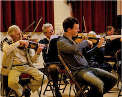

Our Society

Founded 90 years ago in 1923, the Haslemere Musical Society consists of a Symphony Orchestra and Chorus and has been a major contributor to the musical life of South West Surrey.
The Society has built a reputation for its high musical standards and for producing exciting and enjoyable concerts.
Next Performance
May Concert - A Selection of Operatic Extracts
Chorus and Orchestra
Saturday 4th May, Haslemere Hall 19:30
Saturday 4th May, Haslemere Hall 19:30
- Rossini
- Il Barbiere di Siviglia & Villagers' Chorus: Guillaume Tell
- Donizetti
- Chorus of Wedding Guests: Lucia di Lammermoor
- Gounod
- Ballet Music: Faust
- Verdi
- Anvil Chorus
- Mascagni
- Intermezzo and Easter Hymn: Cavalleria Rusticana
- Puccini
- Intermezzo: Manon Lescaut
- Wagner
- Pilgrim's Chorus (Act I) and March (Act II): Tannhäuser
- Wagner
- Prelude to Act III and Bridal Chorus: Lohengrin
- Wagner
- Procession and Chorale: Act III: Die Meistersinger von Nürnberg